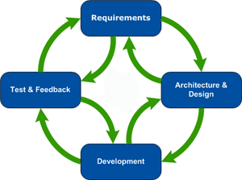
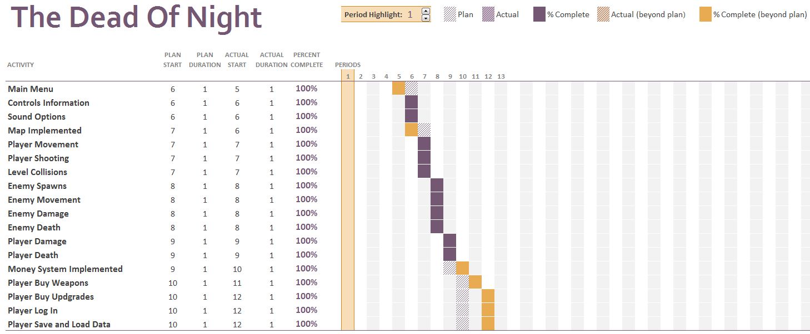
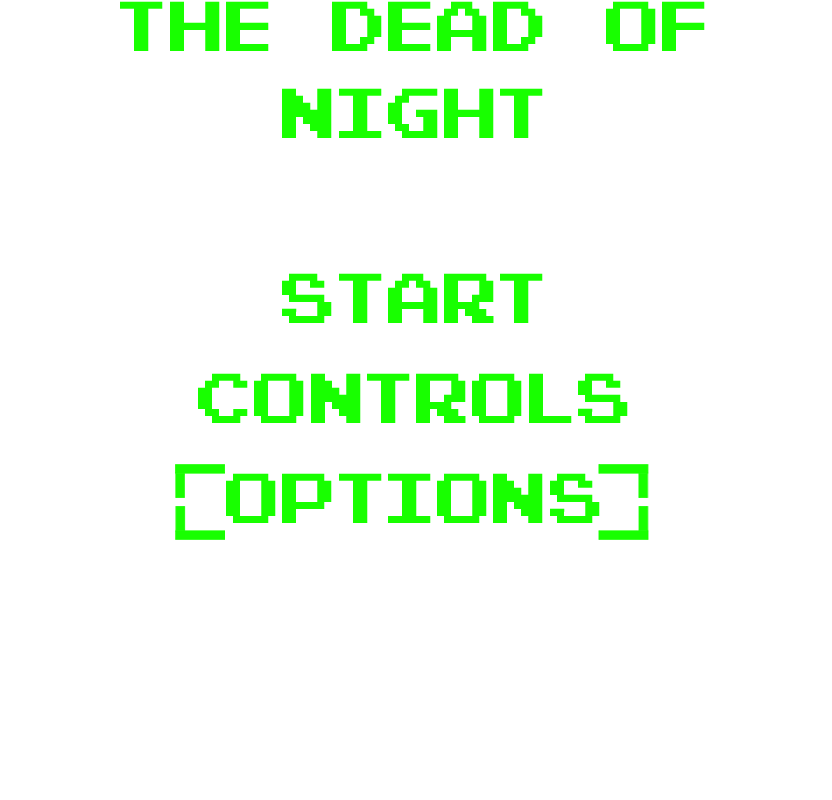
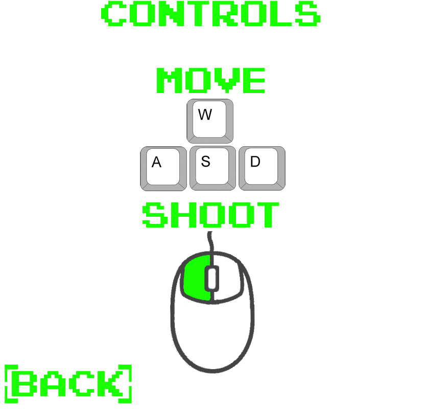
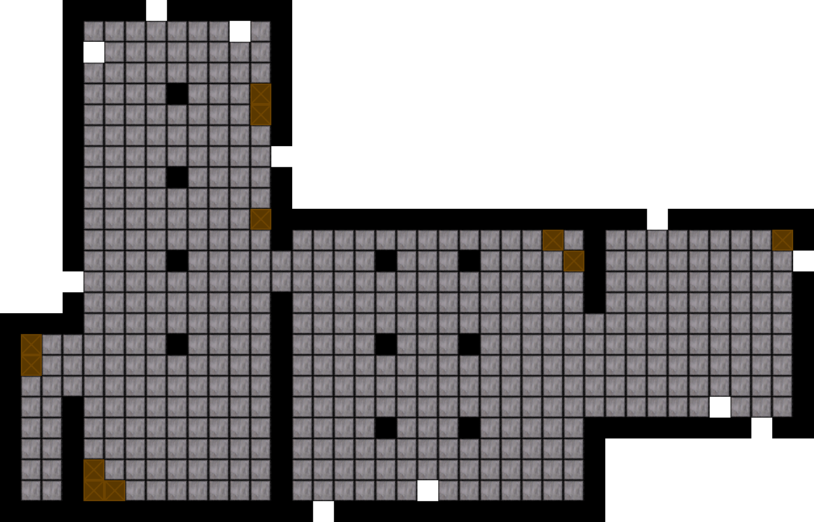
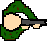
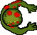

I originally wanted to create a First Person Shooter genre of game for the project, since however we were tasked with using a 2D framework I decided to go with a top down shooter genre of game. Choosing this genre of game meant I could incorporate a lot of elements and play styles found in First Person Shooters, my other reason for choosing this genre of game was that I know from experience and reading reviews of similar games online it can be extremely enjoyable to play. Once I had the main genre of game I wanted to create locked down I looked at what features I wanted to incorporate into the game, I then decided that I wanted to incorporate what I think are the best features from the Hotline Miami, Call of Duty Zombies and Killing Floor series of games.
Hotline Miami see’s the player play as a character named “Jacket”, “Jacket” has been receiving phone calls from a strange group of people who send him to various locations through an 80’s inspired Miami. At these locations “Jacket” has to kill various enemies including gangsters, cops and Russian mobsters or “Jacket” will supposedly be killed by the group that keeps calling. The game is a 2D top down shooter with a retro inspired art style, in terms of gameplay Hotline Miami focuses on speed by using an arcade style of score with the faster the player kills people one after the other the higher the score for each level they gain.
The zombie’s mode in Call of Duty: World at War see’s the player wake up as an unknown soldier inside of a ruined building. After a short time of waking up the player hears a strange noise off in the distance and sees a strange figure running towards them. After a short time undead soldiers in Nazi uniforms brake into the building and the soldier has to defend himself. To help there are strange markings on the wall where the player can magically get weapons from, similarity there is a box where the player can get a randomly selected gun to help kill the undead soldiers. The player must kill of the zombies in order to survive for as long as possible.
Killing Floor is an FPS set in London, England and sees the player take controls of their choice of character from a selection of soldiers and special police officers. The aim of the game is to survive through a set number of waves based on the games difficulty by killing an endless army military mutations that have escaped enclosure from a science company known as Biotech’s Headquarters.
To also help in my design choices for my game I also looked at similar games available to purchase through the PC video game store Steam.
Zombie Zoeds is also a 2D top down shooter it has similar features to the game I aim to create such as verity of weapons and limited health. Zombie Zoeds however has gotten a lot of bad reviews on steam with users complaining about bad controls, bad looking graphics and you can only shoot in the direction you are moving. These issues will be taken on board during my development to ensure I create a better gaming experience.
Xenocide is another top down shooter with a lot of similarities to the game I want to create with the differences being in Xenocide you can collect power ups and it appears there is more than one enemy type. In terms of user feedback on the games Steam page it has received Mostly Positive reviews, the positive reviews highlighted that having unlimited ammo was a nice touch as well as no need to reload, it had a good verity of weapons and upgrades as well as the increasing difficulty kept the game fun. Whereas the negative reviews highlighted the game felt short for the price, it didn’t have a lot of weapons in some people’s opinion and there was not a lot of enemy types.
You find yourself waking up on a cold, damp, hard floor, with your head pounding as if you were running
through incoming enemy artillery. That however would be too plausible, but all you can see is a group of
red dots getting closer and closer and the sound of painful growls getting louder by the second.
Seconds later you see… soldiers… but they weren’t really soldiers anymore.
One of them charges into you and you put him down with a double tap from your pistol. Still unsure
what is really going on your only instinct now is to survive by any means necessary until you have some
time to figure out what is happening around here.
The games genre will be a 2D top down shooter style of game crossed with a wave based survival game genre seen in such titles as Call of Duty Zombies and Killing Floor 1 & 2.
The object for the game is for the player to continually kill zombies in order to gain money and get the most points to set their high score, if at any time the player runs out of ammo they will need to buy a new weapon or more ammo placed around the level. The player will also need to decided what weapons they buy as well as how cautious they are in making every shot count in order to save as much money as possible to buy more and more upgrades.
Before the first zombie of each wave even gets in the level I want the players to be on edge and feel extremely tense as they don’t know what is coming or even when it is coming. During an attack from the zombies they player should feel like they keep coming and will not stop no matter what, overall the game itself should feel difficult and challenging. The player will need to constantly think about what they are doing and what the plan to do in order to not get surrounded or have their back up against a wall.
The audience the game will be targeted towards will be both males and females from the age of 15 and over that have or had an interest in top down shooter and wave based survival games.
The basic version of the game will include one playable level filled with various debris and objects to provide more detail and life to the level. The level will also contain various weapons to purchase and entry points for the zombies to attack the player from. If there is any development time available after all the basic features of the game have been implemented more levels and a level select screen may be added.
The character controlled by the player will come designed in a solider uniform to fit the back story of the game, however the player will be able to purchase different weapons which will affect the way the character looks.
The game will feature one type of enemy which is a zombie, however through the game the zombies will gain slightly more health and speed ever round that the user survives. The main use of the zombies is to spawn in large number of zombies and apply pressure through numbers of enemies rather than various types. To add a slight verity and to throw off the play a zombie will have a randomly generated chance to move faster than the other zombies.
| Player Action | Controls |
| Movement | W, A, S & D keys |
| Rotate and aim player | Mouse |
| Fire weapons | Left mouse button |
| Purchase weapons | E key |
Table 3: Player Input
During the game the player and zombies will be able to collide with each other and static level objects such as walls, of the player collides with a zombie however they will lose health. The player will also be able to kill the zombies by shooting them, each time the player does kills a zombie they will earn some money and points which will display their top score. The money they earn will be used to but new guns/ammo which will be placed around the level. Once the player has been killed they will then be able to purchase upgrades to their ammo count, damage and more health, these upgrades will also be saved to the users account.
My intended goal for the game is to create a fun, enjoyable and challenging experience by combining what I personally feel are the best features from both the Call of Duty Zombies and Killing Floor franchise to create the best survival wave based shooter experience. By also mixing these features into a game with top down perspective and by using 2D graphics it means the game will be able to perform better across a verity of systems and mean the game can reach potentially a wider audience.
See appendix 1 for flowcharts for the games main mechanics.
The development environment I will be using to create both the website to host the game and to create the game itself will be WebStorm from JetBrains.
The reasons for using WebStorm as my IDE is the amount of different features and benefits it brings compared to using a text editor like Notepad++ or Sublime Text, these features include:
These features alone make WebStorm an effective tool to use for any development as it can save a good bit of time.
The framework we have been tasked to use in the creation of the game is Phaser. Phaser is a fast and free 2D framework that uses WebGL for powering browser run games and includes a canvas fall back for browsers with no WebGL support.
To code the game I will be using vanilla JavaScript as I am more comfortable with it, I have opted not to use JQuery even though it can help reduce the amount of code you write just because I do not have a lot of experience with it and I do not want to spent too much time learning that instead of Phaser. TypeScript is another option that could be used when coding in Phaser but similar to JQuery I have no experience using TypeScript.
To create and export the levels for the game I will be using the Tiled Software. The software allows you to create the made using different images and then allows you to export the map in various formats, one format that is helpful for web games is the JSON exporter as it compiles the image locations and properties into a JSON file you can use to easily create your level.
I will be using a program known as TexturePacker in order to add all of my images into an atlas and export it as a .png and JSON file with all the images properties and the name of the single image file. This allows me to load the atlas in Phaser and reference each image by using the key name defined in the JSON file. The other benefit of this software is that it can drastically reduce the amount of memory required for the images which is important with web based games as this can help improve performance.
Piskel is an online pixel art tool to create and export images, I will be using this to create the graphical assets for my game as it is an easy to use tool.
The enemies will be able to navigate through the level avoiding various objects and walls as well as each other in order to reach the players position.
Once the player is within a certain range to the enemies the enemies will then be able to attack the player and reduce the player’s health. Whilst the enemy is attacking the player the enemy will play an attack animation to show that they are able to hurt the player.
The game will use some of the basic laws of physics such as projectiles being limited in their speed and range, characters not being able to move through solid objects. However in terms of movement the player will not experience acceleration or deceleration due to the nature of top down shooters.
The music used within the game will add suspense during moments with no enemies in the level to keep the player guessing when they will appear. During combat music with a faster beat will be played to help heighten the action and excitement during encounters with the enemy. To help accompany the retro look and feel of the pixel art I hope to use a retro style of video game music in the form of 8-bit music or chiptunes, seen in older games such as early Super Mario Bros and the Castlevania series.
Sound effects will be used to express all of the actions in the game. These sound effect s will be used numerous times and will be used for various animations, collision events and different gun attacks. Some of the sound effects to be included in the game have been listed below:
The development method I have decided to adopt for the project is the Agile method. I have decided to use this method compared to other methods such as the Waterfall method, this is due to the fact the Agile method focuses less on the projects documentation and building the entire project at once but rather develop the project incrementally. Another benefit of using the Agile method over the Waterfall method is that the Agile method welcomes changes late into the development cycle; this can prove to be extremely beneficial due to the short development time available for the project. “At its core, agile is about being efficient, focusing on delivering quality in the work products, and being adaptive to change.”[1]
| Agile Method | Waterfall Method | ||
| Pro | Con | Pro | Con |
| Welcomes Changes. | Unclear instructions could hurt project. | Easy to follow and manage. | Changes are hard to implement late into development. |
| Does not require large documentation. | Benefits small projects. | No Software until late stages of development. | |
| Software is being constantly developed. | Steps do not overlap. | High risk. | |
| Benefits small projects. | |||
| Shows attention to both good design and technical implementation. |
Table 2: Agile development methodology vs Waterfall development methodology
Table 1 shows the risk analysis taken for the games development stage to ensure any problems that may arises are assessed early.
Key :( very low=1, low=2, medium=3, high=4, very high=5)
Estimated Probability (1-5)
Estimated impact (1-5)
| Risk | Score | Recognition | Resolution |
| Too much or too little money from killing the zombies. | Estimated Probability (2) Estimated impact (5) |
Will make the game too easy or hard to buy weapons or upgrades. | Testing will need to be carried out to ensure the amount of money gained is balanced. |
| Zombies moving too fast or slow. | Estimated Probability (1) Estimated impact (5) |
Making zombies too fast or slow will make the game too hard or easy and put players off. | Testing will be required from players of various game skills to ensure movement speed is balanced. |
| Upgrades cost too little. | Estimated Probability (3) Estimated impact (4) |
Making the players upgrades too easy to acquire will make the game boring. | With the design of the game being purposefully difficult, the cost of the upgrades will need to reflect this design decision. |
| Not enough weapon verity. | Estimated Probability (1) Estimated impact (3) |
Not having enough types of weapons could leave the game boring and bland. | I will need to ensure the game focuses on a verity of weapons instead of just a large number of the one type. |
Table 1: Risk analysis for game development
A Gantt Chart has been completed to designate and track the time to each of the tasks in the game to ensure the project meets its development deadline.
Below are sketches to show the intended design and look of the game menu, level, characters and weapons. The final design of all the game components is subject to change once development and testing begins, in order to create a better play experience for the users.
The design for the menus are below, the content on the menus will be the same at the finished stage however the colour scheme and layout will be different and fit the overall aesthetic and colour pallet of the game.
 Below is a concept for the playable level in the game, the white squares inside of the level indicate the position of the guns that the user will be able to purchase during gameplay.
This is the concept for the character that the play will be controlling, the look of the player will change as they use different weapons.
This is the design concept for the zombie enemies in the game which the player will be required to kill, the final design may change to show an undead and rotted body design.
